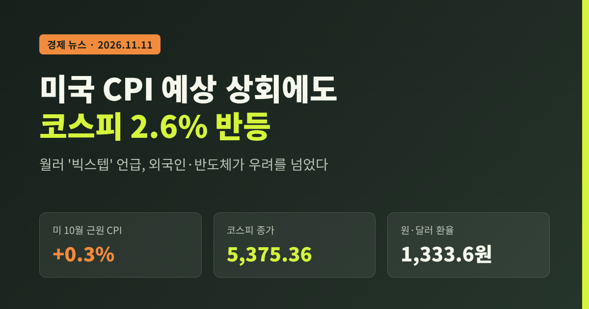
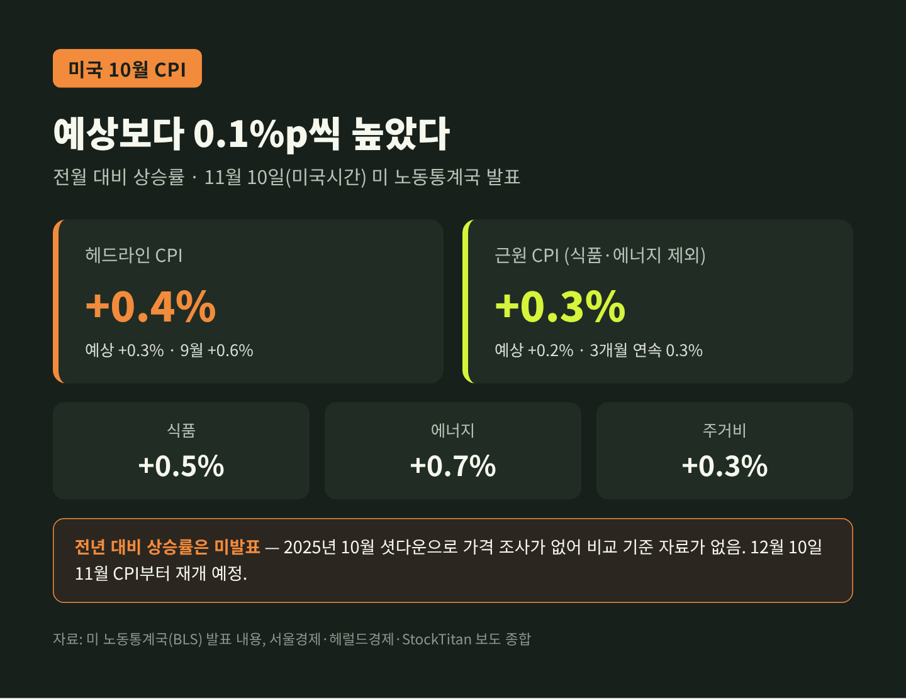
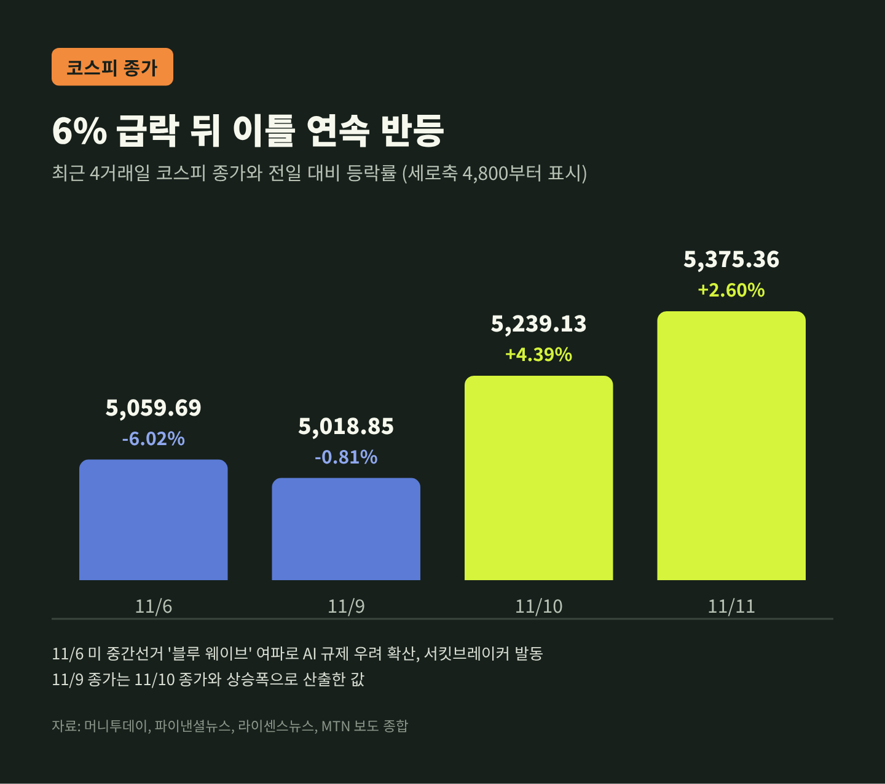
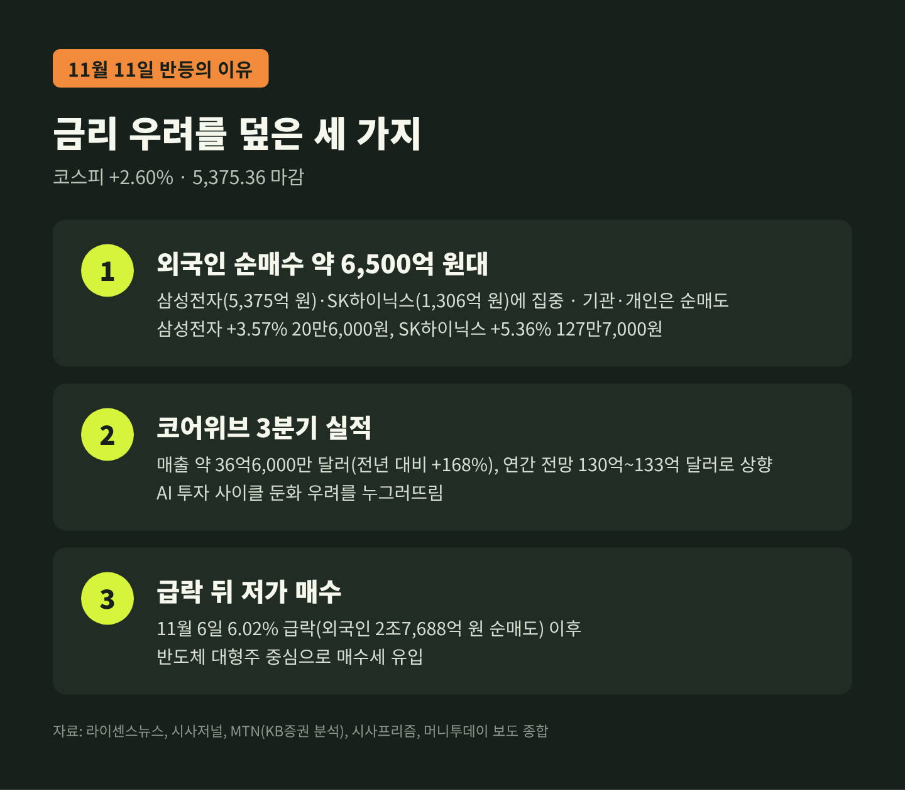
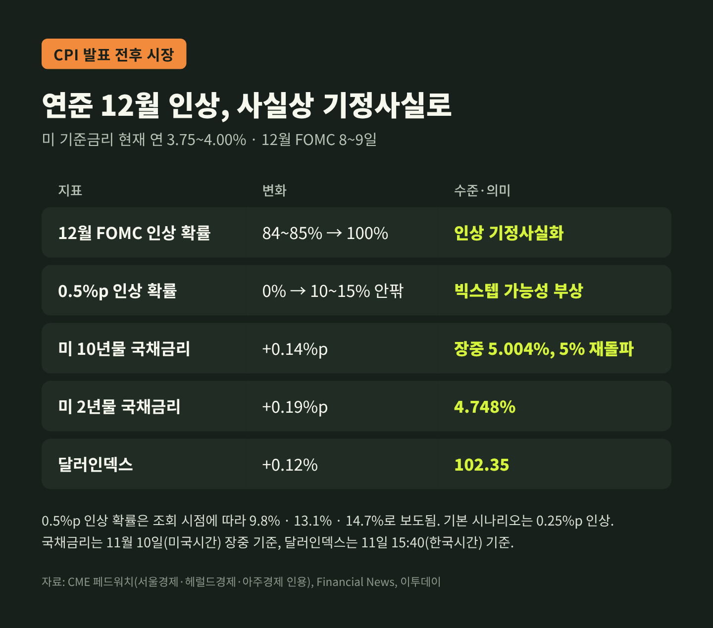
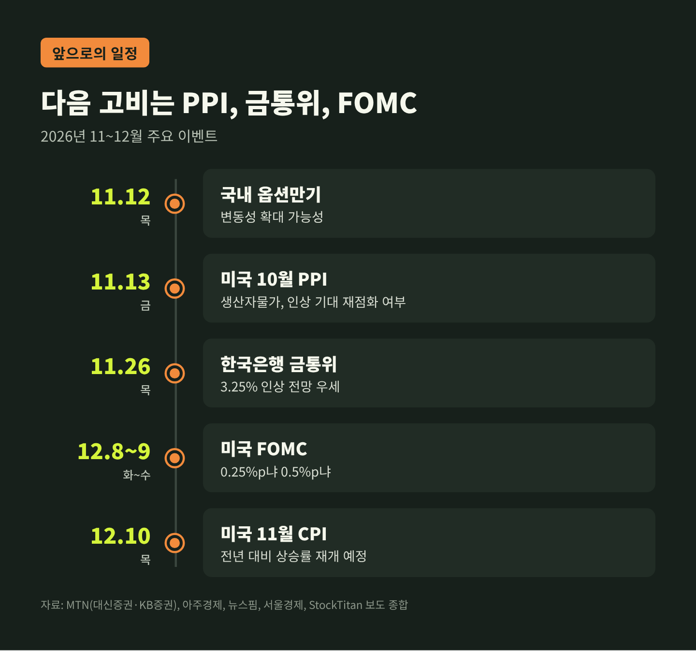

미국 CPI 예상 상회에도 코스피 2.6% 반등, 빅스텝 우려를 넘은 이유

이번 글에서는 미국 10월 소비자물가(CPI)가 예상보다 높게 나오고 연준 안에서 '빅스텝' 얘기까지 나온 다음 날, 코스피가 오히려 2.6% 오른 배경을 정리해 보겠습니다. 숫자가 무엇을 말하는지, 한국 금리와 대출에는 어떤 영향이 있을지 차례로 짚습니다.
3줄 요약
- 미국 10월 CPI는 전월 대비 0.4%, 근원 CPI는 0.3% 올라 예상치를 각각 0.1%p 웃돌았습니다. 월러 연준 이사가 제시한 '0.5%p 인상 검토' 조건이 충족됐습니다.
- 그런데도 11월 11일 코스피는 136.23포인트(2.60%) 오른 5,375.36에 마감했습니다. 외국인이 약 6,500억 원대를 순매수했고, 반도체가 앞장섰습니다.
- 원·달러 환율은 1,333.6원으로 3.9원 내렸습니다. 다음 고비는 13일 미국 생산자물가, 26일 한국은행 금통위, 12월 8~9일 FOMC입니다.
■ 무슨 일이 있었나
한국 시간 10일 밤 10시 30분, 미국 노동통계국이 10월 CPI를 발표했습니다.
헤드라인 CPI는 전월 대비 0.4% 올랐습니다. 시장 예상은 0.3%였습니다. 9월 0.6%보다는 낮아졌지만, 기대만큼 식지는 않았습니다.
더 눈여겨볼 숫자는 근원 CPI입니다. 식품과 에너지를 뺀 이 지표는 0.3% 올라 예상(0.2%)을 넘었습니다. 8월, 9월에 이어 석 달째 같은 0.3%입니다.
세부 항목을 보면 식품이 0.5%, 에너지가 0.7% 올랐습니다. 주거비는 0.3% 올라 전체 월간 상승분의 30% 이상을 차지한 것으로 집계됐습니다.
이번 발표에는 특이한 점이 하나 있습니다. 전년 동월 대비 상승률이 나오지 않았습니다. 2025년 10월 연방정부 셧다운 때 가격 조사가 이뤄지지 않아, 비교할 기준 자료가 없기 때문입니다. 시장이 전월 대비 수치에 유독 민감하게 반응한 이유이기도 합니다.

월러 이사는 정확히 무엇을 말했나
같은 날 크리스토퍼 월러 연준 이사는 런던 강연에서 12월 FOMC에 대한 생각을 밝혔습니다. CPI 발표 직전이었습니다.
그의 기본 입장은 '0.25%p 인상 지지'였습니다. 10월 물가가 개선되더라도 0.25%p는 올려야 한다는 쪽에 기울어 있다고 했습니다.
조건도 하나 달았습니다. 10월 근원 CPI가 앞선 두 달처럼 0.3% 안팎이거나 그 이상이면 0.5%p 인상을 고려해야 한다는 것입니다. 이 경우 0.25%p만 올리는 것은 연준의 "신뢰도를 위태롭게 할 수 있다"고도 말했습니다(서울경제·헤럴드경제 보도).
몇 시간 뒤 발표된 근원 CPI는 정확히 0.3%였습니다. 조건이 그대로 맞아떨어진 셈입니다.
월러는 그동안 비둘기파로 분류되던 인물입니다. 그는 지난해 세 차례 단행한 '보험성' 인하는 최소한 되돌려야 한다고도 했습니다. 로리 로건 댈러스 연은 총재는 최소 두 차례의 0.25%p 인상이 필요하고, 이번 겨울 인상 속도가 가을보다 빨라질 수 있다고 거들었습니다.
채권과 달러가 먼저 움직였다
시장은 즉각 반응했습니다.
미국 10년물 국채금리는 장중 5%를 다시 넘었습니다. 파이낸셜뉴스 영문판 기준 5.004%, 월스트리트저널 기준 5.012%입니다. 정책금리에 민감한 2년물은 약 0.19%p 뛰어 4.74%대에 올라섰습니다.
CME 페드워치에서 12월 인상 확률은 전날 84~85%에서 100%로 올라섰습니다. 0.5%p 인상 확률은 0%에서 10~15% 안팎까지 높아졌습니다. 조회 시점에 따라 9.8%, 13.1%, 14.7%로 매체마다 조금씩 다릅니다. 다만 기본 시나리오는 여전히 0.25%p 인상입니다.
뉴욕증시는 AP 마감 기준 다우 0.3%, S&P500 0.4%, 나스닥 0.7% 내렸습니다. 물가 충격치고는 낙폭이 크지 않았습니다.
■ 왜 코스피는 올랐나
11월 11일 코스피는 약세로 출발했습니다. 간밤 미국 상황을 생각하면 자연스러운 출발이었습니다.
흐름은 오후에 바뀌었습니다. 지수는 136.23포인트(2.60%) 오른 5,375.36에 마감했습니다. 전날 4.39% 오른 데 이어 이틀째 상승입니다. 코스닥은 5.62% 올라 705.10으로 700선을 되찾았습니다.

외국인과 반도체가 끌어올렸다
수급은 분명했습니다. 외국인이 유가증권시장에서 약 6,500억 원대를 순매수했습니다(라이센스뉴스 6,553억 원, 시사저널 6,587억 원). 기관은 4,817억 원, 개인은 7,157억 원을 팔았습니다.
외국인의 돈은 반도체로 향했습니다. 시사저널에 따르면 외국인 순매수 1위는 삼성전자(5,375억 원), 2위는 SK하이닉스(1,306억 원)였습니다.
삼성전자는 3.57% 오른 20만6,000원으로 '20만 원대'를 되찾았습니다. SK하이닉스는 5.36% 오른 127만7,000원에 마감했습니다. SK스퀘어(4.74%), 삼성전기(4.65%)도 함께 올랐습니다. 반면 삼성바이오로직스(-2.59%), 현대차(-0.91%)는 내렸습니다.
코어위브 실적이 불씨가 됐다
반등의 계기로 여러 매체가 꼽은 것은 미국 AI 인프라 기업 코어위브의 3분기 실적입니다.
매출은 약 36억6,000만 달러로 1년 전보다 168% 늘었습니다. 시장 예상도 넘었습니다. 올해 연간 매출 전망은 130억~133억 달러로 올려 잡았습니다.
이 숫자가 중요한 이유가 있습니다. 불과 닷새 전인 11월 6일, 코스피는 6.02% 급락해 5,059.69에 마감했습니다. 미국 중간선거에서 민주당이 상·하원을 모두 가져가면서 AI 데이터센터 규제가 강해질 수 있다는 우려가 번졌습니다. AI 인프라 기업의 자금 조달 여건이 나빠졌다는 걱정도 겹쳤습니다. 당시 머니투데이 보도에 따르면 외국인은 하루에만 2조7,688억 원을 팔았습니다.
AI 투자 사이클이 꺾이는 것 아니냐는 불안. 코어위브 실적은 그 불안을 일단 누그러뜨렸습니다. KB증권은 코어위브 실적이 AI 투자 심리 개선을 뒷받침했다고 분석했습니다(MTN 보도).
정리하면, 이날 시장은 금리보다 반도체 업황에 더 무게를 둔 것으로 보입니다. 급락 뒤 저가 매수 심리도 여기에 힘을 보탰습니다.

환율은 왜 내려갔나
달러 강세 재료가 있었는데도 원·달러 환율은 3.9원 내린 1,333.6원에 마감했습니다.
장 초반에는 1,343.5원으로 6원 올라 출발했습니다. 이후 수출업체의 달러 매도 물량이 꾸준히 나오며 하락으로 돌아섰습니다. 이투데이에 따르면 사흘째 하락이며, 종가 기준 10월 27일 이후 약 2주 만의 최저입니다. 서울경제는 1,350~1,360원대에 달러를 샀던 역외 투자자들이 포지션을 정리한 점도 짚었습니다.
외국인 주식 순매수 역시 원화 강세에 우호적으로 작용한 것으로 풀이됩니다. 같은 시각 달러인덱스는 102.35로 0.12% 올라 있었습니다. 글로벌 달러 강세를 국내 수급이 눌렀다는 평가가 나오는 이유입니다.
■ 배경과 쟁점: 금리는 오르는 쪽으로 움직이고 있다
이번 일을 이해하려면 지금 금리의 방향부터 봐야 합니다.
예전엔 '언제 내리느냐'가 질문이었습니다. 지금은 '얼마나 올리느냐'가 질문입니다.
연준은 9월 16일 기준금리를 0.25%p 올렸고, 10월 28일에는 연 3.75~4.00%로 동결했습니다. 그 사이 물가는 쉽게 잡히지 않고 있습니다. 시사프리즘에 따르면 9월 개인소비지출(PCE) 물가는 전년 대비 3.7%, 근원 PCE는 3.1%였습니다. 목표치 2%와 거리가 있습니다.

한국은행의 고민
한국도 인상 사이클 안에 있습니다. 한국은행은 7월과 8월에 기준금리를 0.25%p씩 올려 연 3.00%로 만들었고, 10월에는 동결했습니다.
11월 26일 금통위에서는 0.25%p 추가 인상(3.25%) 전망이 우세합니다. BNP파리바와 스테이트스트리트는 3.25%를 이번 사이클의 정점으로 봅니다. SK증권은 최종금리를 3.50%로 더 높게 잡았습니다. KB증권은 11월 인상을 예상하면서도 동결 가능성을 배제하지 않았습니다.
변수는 크게 세 가지입니다.
첫째, 한미 금리차입니다. 현재 미국 상단 4.00%와 한국 3.00%의 차이는 1.00%p입니다. 한국이 동결하고 연준이 12월에 0.5%p를 올리면 격차는 1.50%p로 벌어집니다(아주경제 분석). 환율에 부담이 될 수 있는 대목입니다.
둘째, 국내 물가입니다. 10월 소비자물가 상승률은 2.8%로 두 달 연속 낮아졌습니다. 근원물가도 2.8%입니다. 둔화 흐름이지만 여전히 목표 2%를 웃돕니다.
셋째, 가계부채입니다. 10월 예금은행 가계대출 잔액은 1,203조9,000억 원으로 처음 1,200조 원을 넘었습니다. 한 달 새 5조 원 늘었습니다. 주택담보대출 잔액은 958조7,000억 원으로 3조3,000억 원 증가했습니다. 집단대출에 더해, 주식을 사려는 신용대출('빚투')이 다시 늘어난 영향으로 분석됩니다.
신현송 한은 총재는 앞선 선제적 인상 덕분에 연준이나 시장에 휘둘리지 않고 국내 상황에 맞춰 정책을 펼 여유를 확보했다고 말했습니다. 연준이 빨라지더라도 한은이 그 속도를 그대로 따라가지는 않겠다는 뜻으로 읽힙니다.
대출받은 가계에는 무엇이 달라지나
뉴스핌에 따르면 9월 신규 주택담보대출 평균금리는 연 4.88%로 한 달 새 0.22%p 올랐습니다. 고정형은 연 5.11%였습니다.
미국 국채금리가 오르면 국내 시장금리도 영향을 받습니다. 고정형 주담대의 기준이 되는 은행채 금리가 함께 움직이기 쉽습니다. 금통위가 11월에 기준금리를 올리면 변동형 대출 금리도 시차를 두고 반영됩니다.
대출을 새로 받거나 갈아타려는 분이라면, 금통위 결과와 은행 고시 금리를 함께 확인해 보시길 권합니다.
■ 앞으로의 변수와 일정
이틀 반등으로 불안이 끝났다고 보기는 어렵습니다.
KB증권은 금리 우려, 엔비디아 관련 불확실성, 12일 옵션만기에 따른 변동성을 위험 요인으로 꼽았습니다. 대신증권은 13일 발표되는 미국 10월 생산자물가(PPI)를 다음 고비로 봤습니다. 월간 상승률은 둔화하더라도 연간 상승률이 높아질 수 있고, 그 경우 금리 인상 기대가 강해질 수 있다는 분석입니다.
환율은 딜러들 사이에서 1,330원대 초반에서 1,340원대 중후반 범위가 거론됩니다(이투데이).

- 11월 12일: 국내 옵션만기
- 11월 13일: 미국 10월 생산자물가(PPI)
- 11월 26일: 한국은행 금융통화위원회(기준금리 결정)
- 12월 8~9일: 미국 FOMC
- 12월 10일: 미국 11월 CPI(전년 대비 상승률 발표 재개 예정, 스톡타이탄 보도)
정리하면 이렇습니다.
미국 물가는 예상보다 끈질겼고, 연준은 더 빨리 움직일 준비를 하고 있습니다. 그럼에도 한국 증시는 이날 금리보다 AI와 반도체의 체력에 더 크게 반응했습니다.
다만 두 흐름이 계속 다른 방향을 가리키기는 어렵습니다. 금리는 결국 주가의 할인율이고, 가계의 이자 부담이기 때문입니다.
"이번 반등은 금리 우려가 사라져서가 아니라, 잠시 뒤로 밀려서 나온 것입니다."
금리와 반도체 중 어느 쪽이 다음 달 시장을 이끌지 묻는다면, 저는 11월 26일과 12월 9일의 두 결정을 먼저 보고 답하겠습니다.
참고 자료
- 헤럴드경제, 「예상 웃돈 美 10월 소비자물가…월러 "12월 금리 빅스텝도 고려"」, 2026-11-11 — https://biz.heraldcorp.com/article/10933583
- 서울경제, 「CPI 충격에 12월 금리인상 확률 100%...'비둘기파' 월러도 "빅스텝 고려"」, 2026-11-11 — https://m.sedaily.com/article/20112722
- 시사프리즘, 「미국 10월 물가 예상 웃돌아…연준 '빅스텝' 가능성에 국채금리 5% 돌파」, 2026-11-11 — https://www.giprism.com/news/articleView.html?idxno=13051
- StockTitan, 「CPI Report Shows Core Prices Up 0.3% Again, Hitting Waller's Line for Weighing a Half Point Hike」, 2026-11-10 — https://www.stocktitan.net/articles/october-2026-cpi-inflation-report
- Financial News(영문), 「U.S. 10-year Treasury yield tops 5% again」, 2026-11-11 — https://en.fnnews.com/news/202611110337324543
- 라이센스뉴스, 「[마감시황] 코스피, 136.23포인트(+2.60%) 오른 5375.36 마감」, 2026-11-11 — https://www.lcnews.co.kr/news/articleView.html?idxno=211221
- MTN, 「외인 '사자'에 코스피 5300선…코스닥 5.6%↑」, 2026-11-11 — https://news.mtn.co.kr/article/2026111115573998013
- 시사저널, 「美 '빅스텝' 우려 덮은 반도체 훈풍…코스피 5370선 회복」, 2026-11-11 — https://www.sisajournal.com/news/articleView.html?idxno=393644
- 파이낸셜뉴스, 「"이게 얼마 만에 상승이냐"…코스피, 4일 만에 상승 마감」, 2026-11-10 — https://fnnews.com/news/202611101614063289
- 머니투데이, 「'블루 쓰나미'에 코스피도 온통 '파란' 불...6% 급락, 5000피 턱걸이」, 2026-11-06 — https://www.mt.co.kr/article/2026110615460844361
- 이투데이, 「[환율마감] 원·달러 사흘째 하락해 2주일만 최저, 미 CPI 누른 수급」, 2026-11-11 — https://www.etoday.co.kr/news/view/2646954
- 서울경제, 「원·달러 환율, 美 물가 부담에도 하락 [김혜란의 FX]」, 2026-11-11 — https://m.sedaily.com/article/20113047
- 뉴스핌, 「美 고물가에 빅스텝 거론…한은, 11월 금리 추가 인상 초읽기」, 2026-11-11 — https://www.newspim.com/news/view/20261111001059
- 아주경제, 「美 '빅스텝' 거론에 한은 금리 인상 압력 커지나」, 2026-11-11 — https://www.ajunews.com/view/20261111143938337
- 파이낸셜뉴스, 「BNP파리바 "11월 3.25%가 금리 정점"…반도체 낙수효과에 의문」, 2026-11-10 — https://www.fnnews.com/news/202611102025132714
- 세계일보, 「은행권 가계대출 10월 6.4조 급증… 1200조 첫 돌파」, 2026-11-11 — https://www.segye.com/newsView/20261111515886
- 아시아경제, 「은행 가계대출, 다시 5조원 증가…주담대·신용대출 모두 늘어」, 2026-11-11 — https://view.asiae.co.kr/article/2026111110184814703
- 아주경제, 「美 기업들 '인플레 경계심' 2년여 만에 최고…이번주 CPI·PPI 주목」, 2026-11-08 — https://www.ajunews.com/view/20261108144801582
본 글은 정보 제공 목적이며 투자 권유가 아닙니다. 투자 판단과 책임은 본인에게 있습니다.
#미국CPI #코스피 #월러 #빅스텝 #FOMC #한국은행금통위 #원달러환율 #주담대금리